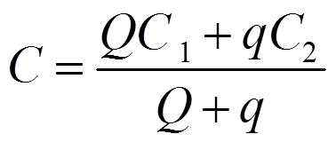
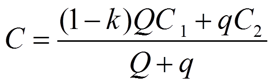
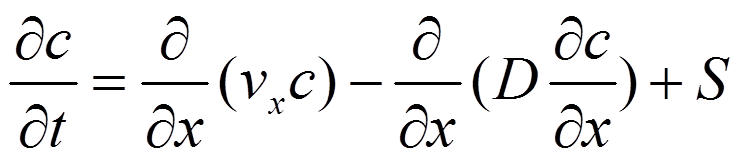
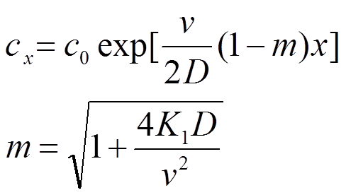
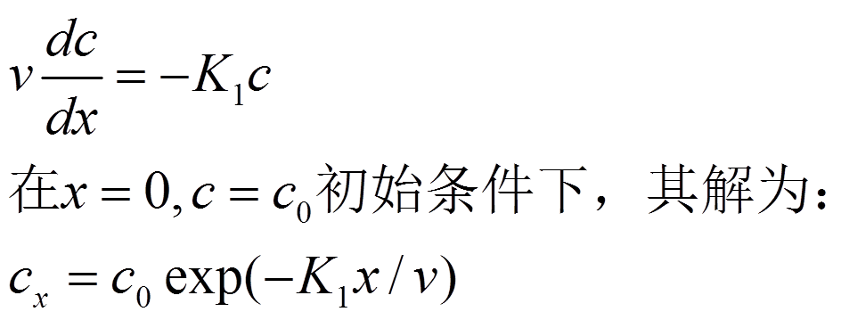
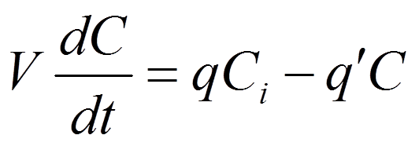
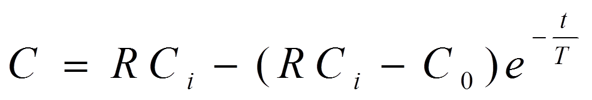
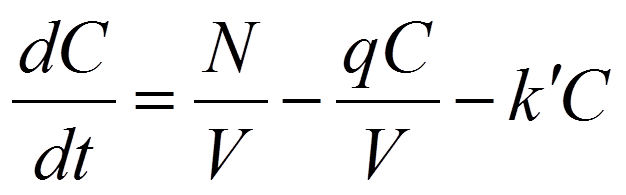
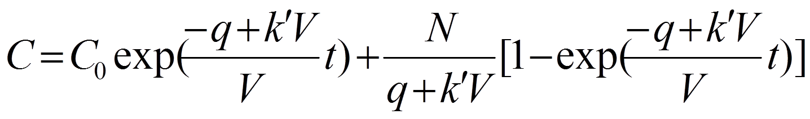

水质模型
1. 零维水质模型（完全混合模型）
如果研究的河段是恒定均匀流，且排污量也是恒定不变的。当污染物是既不分解，也不沉淀的保守物质时，河段水质模型为
式中，C1，C2，C分别表示河流中原有的、入河污水的、河水与污水均匀混合后的污染物浓度（mg/L）;Q，q分别为大河流量和污水排入流量（m3/s）。
当污染物是非保守可降解物质时，水质方程则为
混合后污染物浓度：____mg/L
2. 一维水质模型
一维水质模型的假设条件： 某一水团沿水流运动方向移动，同时存在于该水团中的污染物亦随之移动，在运动过程中，污染物由于降解或转化成其它形式而发生浓度变化，这一变化往往与河流状态有关如：水温、溶解氧浓度等等，一维模型适用的假设条件是横向和垂直方向混合相当快，认为断面中的污染物浓度是均匀的。
(1) 稳态：在均匀河段上定常排污条件下，河段横截面、流速、流量、污染物的输入量和弥散系数都不随时间变化。
同时污染物按一级化学反应，不考虑源和汇，则有如下解：
K1——污染物降解的速率常数 D——纵向弥散系数 v——河水的流速
(2) 忽略弥散的一维稳态水质模型
适用河流较小，流速不大，弥散系数很小情况，微分方程为：
下游x（m）处浓度：____mg/L
3. 湖库水质模型（完全混合箱式模型）
(1) 保守物质：当流进湖泊的污水量与流出湖泊的湖水量不相等时，对于守恒物质（惰性物质），根据质量守恒定律，单位时间湖泊内污染物浓度C的变化可用下式表示：
式中: q—流入湖泊的污水量，m3/d：Ci——入湖污水中污染物浓度（m3/L）； q’—流出湖泊的湖水量加量m3／d；v——湖泊容积（m3）；
设上式初始条件为：t＝0时，C＝C0，将上式积分，得到t时刻的湖水中污染物的平均浓度
式中：R—流进湖泊的水量与流出湖泊的水量的比值q/q`;T——污水在湖中滞留时间:T＝V／q。
非保守物质：当污染物为易分解有机物时，湖水中污染物浓度的变化，可用下列方程表示：
式中 c——湖水污染后有机物的含量，m3／L；c0——起始时湖水有机物浓度，m3／L； N——每日湖中有机物的输入总量，g／d； V——湖泊容积，m2； q——湖泊流出水量，m3／d； k'——有机物分解系数，1／d。
设上式初始条件为：t＝0时，C＝C0，将上式积分，得到t时刻的湖水中污染物的平均浓度：
